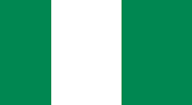

Taiwo Oyewole
My name is Taiwo Oyewole, I am a student at BYU-Idaho studying Web Design and Development. I am originally from Nigeria and my plan is to be a tech guy and vist the USA someday. I love watching moviesand also learning new things.
Taiwo, Nigeria
Nigeria is a country in West Africa, bordering Niger in the north, Chad in the northeast, Cameroon in the east, and Benin in the west. Its coast in the south lies on the Gulf of Guinea in the Atlantic Ocean. Nigeria is the most populous country in Africa. The capital city is Abuja, and the largest city is Lagos.